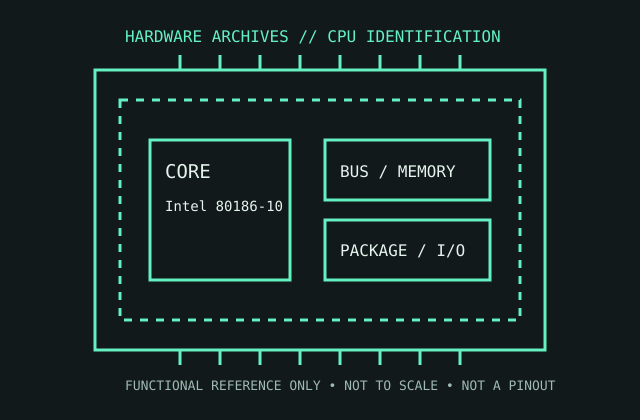

[ EARLY X86 PROCESSORS // IDENTIFIED COMPONENT ]
Intel 80186-10
A 10 MHz member of Intel’s 80186 16-bit x86 family, introduced in 1982 with system-control peripherals integrated on the CPU die.

MODEL IDENTIFICATION: Intel 80186-10. Read the full top marking/OPN, speed grade, package, and stepping from the physical part; do not transfer specifications across similarly named revisions.
Recorded specifications
| Cataloged part | Intel 80186-10 |
|---|---|
| Era / family | 16-bit x86 embedded/PC-compatible processor family, 1982; cataloged speed grade 10 MHz. |
| Key specifications | 10 MHz clock rating; 16-bit external data bus and 20-bit address space; integrated clock generator, interrupt controller, DMA channels, timers, chip-select logic, and DRAM refresh; 68-lead PLCC package on this package variant. |
| Interface / fit | Not a drop-in 8086/8088 replacement: the on-chip peripherals and bus timing change system design. Confirm package option and pinout before selecting a host board. |
| Variants / identification | 80186 variants differ by clock grade and package; the 80188 has an 8-bit external bus. The “-10” suffix identifies a speed grade, not an interchangeable package. |
Compatibility and service notes
- Not a drop-in 8086/8088 replacement: the on-chip peripherals and bus timing change system design. Confirm package option and pinout before selecting a host board.
- 80186 variants differ by clock grade and package; the 80188 has an 8-bit external bus. The “-10” suffix identifies a speed grade, not an interchangeable package.
- Archive the complete top marking and package form. Verify the target board’s bus-control logic and memory map against the 80186 hardware manual before power-up; preserve original peripheral configuration notes.
- Before installation, compare the exact CPU marking with the motherboard maker’s support list, board revision, BIOS minimum, package/socket, power requirements, and memory type. Do not force a package into a socket.
Service & archival record
Archive the complete top marking and package form. Verify the target board’s bus-control logic and memory map against the 80186 hardware manual before power-up; preserve original peripheral configuration notes.
For a collection record, photograph both sides, retain the full model/OPN and date/lot codes, describe package and contact condition, and record the tested motherboard revision, firmware, cooling, memory, and measured operating conditions. Separate measured observations from published limits.
Sources & further reading
- Intel 80186/80188 User’s Manual (manufacturer manual; 1985 edition)Model-specific manufacturer, technical-document, or product-history reference; consult the exact device marking and board revision.
- Intel 80186 product-history context — Intel MuseumModel-specific manufacturer, technical-document, or product-history reference; consult the exact device marking and board revision.
- Intel 80186/80188 hardware reference scans (Bitsavers index)Model-specific manufacturer, technical-document, or product-history reference; consult the exact device marking and board revision.
Third-party mirrors or historical document indexes may host manufacturer-authored manuals. Check document revision and exact model marking; board compatibility remains specific to its maker and firmware.